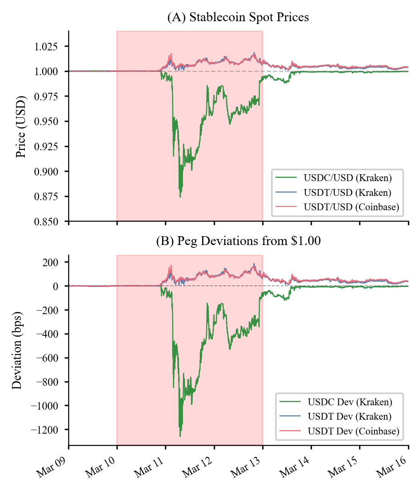

Forecasting Systems
Point-in-time macro pipelines, walk-forward validation, and model fusion.
UChicago financial mathematics + quantitative research
I build market research systems that turn messy, lagged, high-frequency, and macroeconomic data into testable signals, risk views, and trading decisions.
Profile
Hello! My name is Dhruv Kohli. I am currently a graduate student pursuing an M.S. in Financial Mathematics at the University of Chicago, where I also completed honors degrees in Mathematics and Economics. In my free time I love to play poker, rugby, and basketball, build Lego and random projects, and cook (a lot of cooking).
On this site you will find some of my projects and papers. Most of my quant work sits at the intersection of statistical modeling, data engineering, portfolio research, and trading strategy, with a focus on problems where release lags, liquidity, structural breaks, noisy labels, and market constraints matter before a result deserves confidence. Feel free to contact me if you have any questions.
Point-in-time macro pipelines, walk-forward validation, and model fusion.
Quote fragmentation, stablecoin stress, liquidity frictions, and price discovery.
Yield curve models, relative value diagnostics, risk dashboards, and PM tooling.
Flagship System
A private, production-grade forecasting stack for U.S. Nonfarm Payrolls, built around point-in-time data, walk-forward validation, and benchmark-aware model blending.
I built an end-to-end NFP forecasting system that turns messy macro, weather, and financial data into release-cutoff-safe forecasts. The system treats every forecast as an event-time problem: data availability, revision timing, missingness, benchmark bias, and stale output risk all have to be controlled before a model result is trusted.
The public summary intentionally avoids feature identities, source mix, exact model weights, and live forecast values. What it does show is the research process: leakage-safe data engineering, tree-model forecasting, walk-forward model selection, weighted blending, and honest comparison against consensus benchmarks.
Point-in-time out-of-sample months, excluding COVID/reopening distortion.
Model 1 MAE over the latest 50-month evaluation window.
Model 2 beat median consensus in 75% of the latest 24 monthly forecasts.
Model 1 lower RMSE than median consensus over the latest 50 months.
A tree-model signal routed through walk-forward selection, benchmark anchoring, and MAE-optimized weighting. It is designed to minimize the absolute miss size while staying inside a strict point-in-time contract.
A dynamic weighted blend that changes how much it trusts the independent model signal versus the benchmark through walk-forward evidence. It is strongest as a stable benchmark-beating layer across repeated windows.
Macro, weather, and financial inputs
Point-in-time snapshots and release calendars
Tree models, walk-forward selection, and blends
Archived metrics, reports, and forecast checks
Disclosure boundary: feature names, source-level construction, exact weights, model internals, and live forecast values are intentionally omitted.
Featured Research
Winning Paper, IAQF Student Competition 2026 with Prashanth Bhaskara, Sparsh Agarwal, and Sankalp Yadav.
We studied the March 2023 USDC de-peg after Silicon Valley Bank collapsed, using 1-minute data from Binance, Coinbase, and Kraken to separate visible quote-currency fragmentation from true USD-adjusted arbitrage residuals.
The result is a sharp two-layer market story: the adjusted BTC basis mean-reverted in about 0.6 minutes during the crisis, while the USDC peg deviation persisted for roughly 572 minutes. The durable failure localized to the stablecoin reserve layer, but the stress still propagated into liquidity, volatility, and executable arbitrage.
Adjusted basis half-life during crisis
USDC peg deviation half-life
Exchange data synchronized on UTC grid
Moving-block bootstrap replications


Experience
Zurich-based market risk and quantitative internship beginning June 2026.
Built a point-in-time U.S. Nonfarm Payroll forecasting system spanning macro, weather, and financial data, tree-model forecasting, walk-forward validation, and benchmark-aware weighted blends.
Developed Nelson-Siegel yield curve tools, z-score diagnostics, Bloomberg data workflows, and BQuant/VBA applications for fixed income research.
Helped scale a Web3 asset protection startup through fundraising, operations, user acquisition, and early market validation.
TA for economics and mathematics courses, and former Co-President of Phoenix Funds with a focus on fixed income and derivatives education.
Toolkit
Python, SQL, R, VBA, MATLAB, BQuant
Machine learning, econometrics, optimization, Monte Carlo, time series
Fixed income, derivatives, macro data, market microstructure, crypto rails
Poker, rugby, basketball, chess, cooking, Lego, travel, and board games
Documents